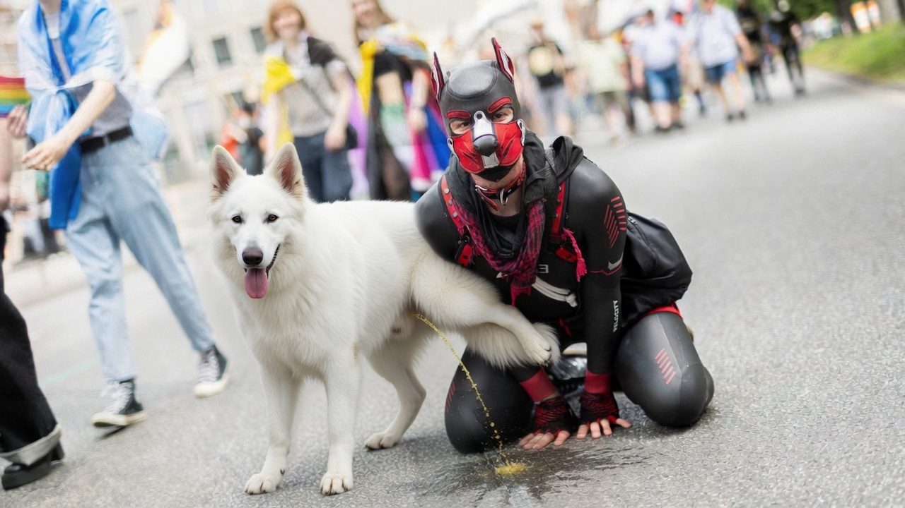

AfD tarnt Wahlwerbung als „FCKAFD“-Protest

BERLIN – Die AfD hat ihre bislang erfolgreichste Wahlkampfveranstaltung in Berlin als Protest gegen sich selbst getarnt. Bei einem Berliner Fetischstraßenfest zogen Männer in Hundemasken, Leinen und Geschirren, begleitet von leicht bis gar nicht bekleideten „Herrchen“, durch ein Wohnviertel, riefen „FCKAFD“ und ließen sich von Kindern streicheln.
Der Plan sei bestechend einfach gewesen: Man müsse nur einen sexuellen Fetisch im öffentlichen Raum möglichst unverhohlen zur Schau stellen, Anwohnern und Touristen jeder Altersklasse aufs Auge drücken und gleichzeitig laut gegen die AfD protestieren.
Die Botschaft: Wer die Inszenierung und Schaustellung sexueller Fetische vor Kindern befremdlich finde, müsse wohl Nazi sein und die AfD gut finden. Wie erwartet, war die Veranstaltung ein großer Erfolg für die AfD, die sogar internationale Presse anlockte.
„Wir hätten denselben Effekt mit Plakaten versucht“, erklärte ein Parteistratege. „Aber niemand hätte uns diese Übertreibung geglaubt.“
So habe man besorgten Eltern und Rentnern die Wahlentscheidung leicht gemacht – ohne ein einziges AfD-Mitglied einsetzen zu müssen.
Zu Zwischenfällen kam es lediglich, als eine Handvoll als Eichhörnchen verkleideter Aktivisten der Gruppe „Widerstand“ die AfD-Veranstaltung stören wollten – dabei vergaßen diese jedoch, dass es sich bei den Demonstranten nicht um richtige Hunde handelte. „Wir waren wohl selber etwas zu verwirrt“, sagte ein Sprecher der Aktivistengruppe.
Anlass: Vom 10. bis 13. September 2026 fand in Berlin die Folsom Europe statt. Zum öffentlichen Leder- und Fetischstraßenfest in Schöneberg gehörten laut Veranstalter ein Puppy Walk sowie ein eigener Bereich für Puppies, Furries und ihre Handler. Die Veranstaltungsregeln weisen ausdrücklich auf das Wohnviertel mit Schule, Kindergarten und Familien hin. Nacktheit und sexuelle Handlungen im öffentlichen Raum seien nicht erlaubt. Folsom Europe · Veranstaltungsregeln
← Zurück zur Startseite